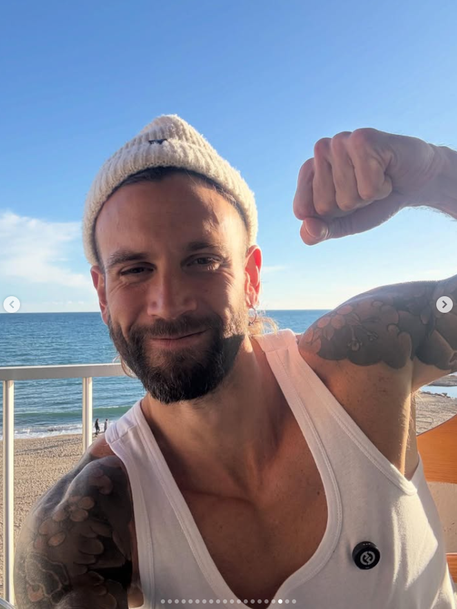
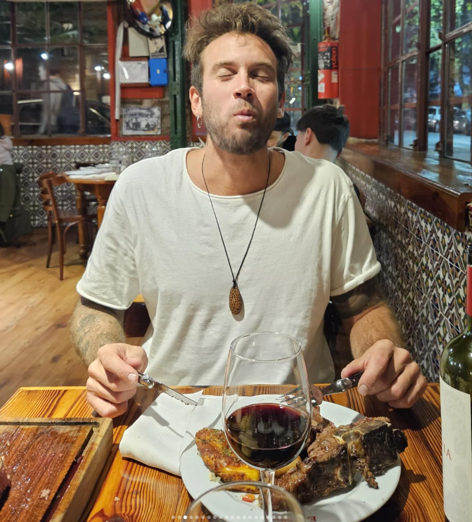

<!-- ═══════════════════════════════════════════════════════════════════════════
     SECCIÓN 8: DESPUÉS - TRANSFORMACIÓN Y PROPÓSITO
     ────────────────────────────────────────────────────────────────────────────
     Descripción: Sección que muestra el "después" de Faku con su galería
     de imágenes y su propósito actual: marca personal, amor propio y coaching.
═══════════════════════════════════════════════════════════════════════════ -->

<style>
  /* ══════════ ESTILOS GLOBALES ══════════ */
  :root {
    --brand: #1f7bff;
    --brand2: #3c5cff;
  }

  * {
    box-sizing: border-box;
  }

  body {
    margin: 0;
    font-family: ui-sans-serif, system-ui, -apple-system, Segoe UI, Roboto, Arial, sans-serif;
  }

  .before-section {
    padding: 80px 0;
    position: relative;
    overflow: hidden;
  }

  .before-container {
    max-width: 1200px;
    margin: 0 auto;
    padding: 0 20px;
  }

  .before-header {
    text-align: center;
    margin-bottom: 60px;
  }

  .before-title {
    font-size: clamp(32px, 5vw, 48px);
    font-weight: 900;
    letter-spacing: -0.8px;
    margin: 0 0 16px;
    color: rgba(12, 22, 40, 0.96);
    line-height: 1.1;
    position: relative;
    display: block;
    width: fit-content;
    margin-left: auto;
    margin-right: auto;
  }

  .before-title::after {
    content: '';
    position: absolute;
    bottom: -8px;
    left: 50%;
    transform: translateX(-50%);
    width: 180px;
    height: 3px;
    background: linear-gradient(90deg, transparent, rgba(12, 22, 40, 0.2), transparent);
    border-radius: 2px;
  }

  .before-subtitle {
    font-size: 17px;
    color: rgba(12, 22, 40, 0.72);
    max-width: 680px;
    margin: 0 auto 30px;
    line-height: 1.7;
  }

  .before-content {
    display: grid;
    grid-template-columns: 1fr 1fr;
    gap: 40px;
    align-items: center;
  }

  .before-image-wrapper {
    position: relative;
    height: 100%;
    min-height: 600px;
    display: flex;
    flex-direction: row;
    gap: 12px;
    align-items: stretch;
  }

  #gallery-wrapper-after {
    flex-direction: row;
  }

  .gallery-item-horizontal {
    position: relative;
    border-radius: 16px;
    overflow: hidden;
    cursor: pointer;
    transition: all 0.6s cubic-bezier(0.25, 0.46, 0.45, 0.94);
    background: rgba(255, 255, 255, 0.9);
    border: 1px solid rgba(12, 22, 40, 0.1);
    box-shadow: 0 4px 20px rgba(20, 40, 90, 0.08);
    flex: 0 0 80px;
  }

  .gallery-item-horizontal img {
    width: 100%;
    height: 100%;
    object-fit: cover;
    display: block;
    transition: all 0.6s cubic-bezier(0.25, 0.46, 0.45, 0.94);
  }

  .gallery-item-horizontal.active,
  .gallery-item-horizontal:hover {
    flex: 1 1 500px;
    z-index: 10;
    box-shadow: 
      0 25px 80px rgba(31, 123, 255, 0.25),
      0 12px 40px rgba(20, 40, 90, 0.18);
    border-color: rgba(31, 123, 255, 0.4);
    transform: scale(1.02) translateY(-4px);
  }

  .gallery-item-horizontal.active img,
  .gallery-item-horizontal:hover img {
    transform: scale(1.05);
  }

  .gallery-item-horizontal::before {
    content: '';
    position: absolute;
    inset: 0;
    background: linear-gradient(135deg, rgba(31, 123, 255, 0.1) 0%, transparent 50%, rgba(60, 92, 255, 0.08) 100%);
    opacity: 0;
    transition: opacity 0.6s cubic-bezier(0.25, 0.46, 0.45, 0.94);
    z-index: 1;
    pointer-events: none;
  }

  .gallery-item-horizontal.active::before,
  .gallery-item-horizontal:hover::before {
    opacity: 1;
  }

  .before-story {
    padding: 20px 0;
  }

  .story-timeline {
    display: flex;
    flex-direction: column;
    gap: 32px;
  }

  .timeline-item {
    position: relative;
    padding-left: 32px;
  }

  .timeline-item::before {
    content: '';
    position: absolute;
    left: 0;
    top: 8px;
    width: 12px;
    height: 12px;
    border-radius: 50%;
    background: linear-gradient(135deg, #1f7bff, #3c5cff);
    box-shadow: 0 0 0 4px rgba(31, 123, 255, 0.15);
  }

  .timeline-item::after {
    content: '';
    position: absolute;
    left: 5px;
    top: 20px;
    width: 2px;
    height: calc(100% + 16px);
    background: linear-gradient(180deg, rgba(31, 123, 255, 0.3), transparent);
  }

  .timeline-item:last-child::after {
    display: none;
  }

  .timeline-year {
    font-size: 14px;
    font-weight: 700;
    color: rgba(31, 123, 255, 0.9);
    letter-spacing: 0.5px;
    margin-bottom: 8px;
    text-transform: uppercase;
  }

  .timeline-content {
    color: rgba(12, 22, 40, 0.86);
    line-height: 1.7;
    font-size: 15px;
  }

  .timeline-content strong {
    color: rgba(12, 22, 40, 0.96);
    font-weight: 700;
  }

  .gallery-cta {
    margin-top: 30px;
    text-align: center;
  }

  .btn {
    display: inline-flex;
    align-items: center;
    justify-content: center;
    gap: 10px;
    padding: 12px 14px;
    border-radius: 14px;
    border: 1px solid rgba(12, 22, 40, 0.14);
    background: rgba(255, 255, 255, 0.72);
    color: rgba(12, 22, 40, 0.92);
    text-decoration: none;
    font-weight: 900;
    letter-spacing: 0.2px;
    cursor: pointer;
    transition: transform 0.15s ease, background 0.15s ease, border-color 0.15s ease, box-shadow 0.15s ease;
    box-shadow: 0 10px 26px rgba(20, 40, 90, 0.08);
  }

  .btn.primary {
    background: linear-gradient(135deg, rgba(31, 123, 255, 0.95), rgba(60, 92, 255, 0.9));
    border-color: rgba(31, 123, 255, 0.52);
    color: rgba(255, 255, 255, 0.96);
    box-shadow: 0 10px 30px rgba(31, 123, 255, 0.26), 0 0 0 1px rgba(255, 255, 255, 0.18) inset;
  }

  .btn.primary:hover {
    box-shadow: 0 14px 42px rgba(31, 123, 255, 0.3), 0 0 0 1px rgba(255, 255, 255, 0.24) inset;
  }

  /* ══════════ RESPONSIVE ══════════ */
  @media (max-width: 900px) {
    .before-section {
      padding: 60px 0;
    }
    .before-content {
      grid-template-columns: 1fr;
      gap: 40px;
    }
    .before-image-wrapper {
      min-height: 400px;
      order: 1;
    }
    .gallery-item-horizontal {
      flex: 0 0 60px;
    }
    .gallery-item-horizontal:hover {
      flex: 1 1 350px;
    }
    .before-story {
      order: 2;
    }
  }

  @media (max-width: 600px) {
    .before-section {
      padding: 50px 0;
    }
    .before-header {
      margin-bottom: 40px;
    }
    .before-image-wrapper {
      min-height: 300px;
      gap: 8px;
    }
    .gallery-item-horizontal {
      flex: 0 0 50px;
      border-radius: 12px;
    }
    .gallery-item-horizontal:hover {
      flex: 1 1 250px;
    }
    .story-timeline {
      gap: 24px;
    }
    .timeline-content {
      font-size: 14px;
    }
  }

  @media (prefers-reduced-motion: reduce) {
    .gallery-item-horizontal,
    .gallery-item-horizontal img,
    .gallery-item-horizontal::before {
      transition: none;
    }
  }
</style>

<section id="despues" aria-label="Sección después" class="before-section">
  <div class="before-container">
    <div class="before-header">
      <h2 class="before-title">¿Quién soy ahora?</h2>
      <p class="before-subtitle">
        El objetivo no es "ser perfecto", sino caminar con esperanza y dirección. 
        Hoy mi propósito es ayudar a otros a transformar su vida.
      </p>
      
    </div>

    <div class="before-content">
      <!-- COLUMNA IZQUIERDA: HISTORIA -->
      <div class="before-story">
        <div class="story-timeline">
          
          <div class="timeline-item">
            <div class="timeline-year">Amor Propio</div>
            <div class="timeline-content">
              Creé la <strong>Sala de Amor Propio</strong>, un espacio donde trabajamos el desarrollo personal, eliminar vicios y conectar con el ser. Es un lugar seguro donde las personas pueden transformar su vida desde adentro hacia afuera.
            </div>
          </div>

          <div class="timeline-item">
            <div class="timeline-year">Marca Personal</div>
            <div class="timeline-content">
              Ayudo a las personas a <strong>crecer en redes sociales</strong> y construir su marca personal auténtica. No se trata de seguir tendencias, sino de mostrar quién realmente eres y el valor que aportas al mundo.
            </div>
          </div>

          <div class="timeline-item">
            <div class="timeline-year">Coaching 1:1 VIP</div>
            <div class="timeline-content">
              Ofrezco <strong>mentorías personalizadas</strong> donde trabajo uno a uno con personas que quieren transformar su vida. Es un acompañamiento profundo, honesto y transformador basado en mi propia experiencia.
            </div>
          </div>

          <div class="timeline-item">
            <div class="timeline-year">Impacto</div>
            <div class="timeline-content">
              Hoy tengo más de <strong>135.000 personas</strong> en Instagram que confían en mi mensaje. Mi intuición tenía razón: había algo más, y ese algo más es poder ayudar a otros a transformar su vida como yo lo hice conmigo.
            </div>
          </div>

          <div class="timeline-item">
            <div class="timeline-year">Gratitud</div>
            <div class="timeline-content">
              <strong>Gracias Dios por esta oportunidad. Gracias todos los días.</strong> Cada día es una nueva oportunidad de servir, de crecer y de ayudar a otros a encontrar su camino. Esta es mi misión. <strong>— FACU</strong>
            </div>
          </div>

        </div>
      </div>

      <!-- COLUMNA DERECHA: GALERÍA HORIZONTAL -->
      <div class="before-image-wrapper" id="gallery-wrapper-after">
        <div class="gallery-item-horizontal" data-gallery-item-after="0">
          
        </div>
        <div class="gallery-item-horizontal" data-gallery-item-after="1">
          
        </div>
        <div class="gallery-item-horizontal" data-gallery-item-after="2">
          
        </div>
        <div class="gallery-item-horizontal" data-gallery-item-after="3">
          
        </div>
      </div>
    </div>
  </div>
  <div class="gallery-cta">
    <a href="#precios" class="btn primary">Empezar mi transformación</a>
  </div>
</section>

